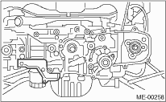
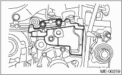
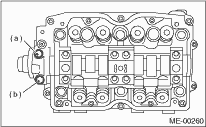
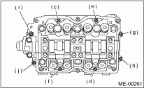
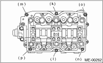
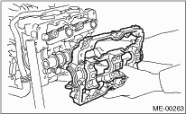

NOTE:
If only a single part is replaced, perform the work without removing the engine from vehicle. Refer to “Valve Clearance” for preparation work. 
1. Remove the V-belts.
2. Remove the crank pulley.
3. Remove the timing belt cover.
4. Remove the timing belt.
5. Remove the cam sprocket.
6. Remove the timing belt cover No. 2 (LH).
7. Remove the timing belt cover No. 2 (RH).
NOTE:
Do not damage or lose the seal rubber when removing the timing belt covers.

8. Remove the tensioner bracket.

9. Remove the camshaft position sensor support. (LH side only)
10. Remove the oil level gauge guide. (LH side only)
11. Remove the valve rocker assembly.
12. Remove the camshaft cap.
(1) Remove the bolts (a) and (b) in alphabetical sequence.

(2) Equally loosen the bolts (c) through (j) all the way in alphabetical sequence.

(3) Remove the bolts (k) through (p) in alphabetical sequence using ST.
| ST 499497000 | TORX PLUS® |

(4) Remove the camshaft cap.

13. Remove the camshaft.
14. Remove the oil seal.
15. Remove the plug from rear side of camshaft.
CAUTION:
• Do not remove the oil seal unless necessary.
• Do not scratch the journal surface when removing the oil seal.